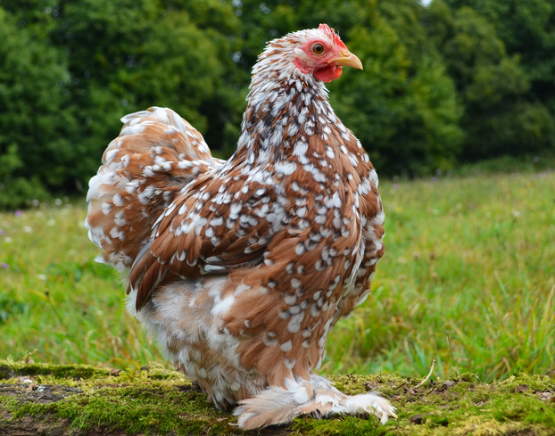

Poule Pékin
La Pékin est une petite poule d’ornement appréciée pour sa silhouette ronde, ses pattes emplumées et son côté décoratif. Elle plaît beaucoup aux familles et aux passionnés qui recherchent une race agréable à observer dans une basse-cour.